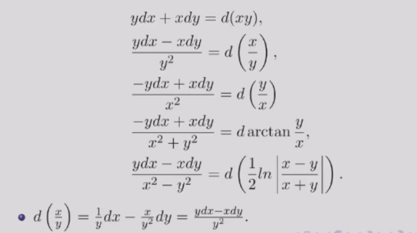

常微分方程¶
约 1657 个字 预计阅读时间 5 分钟
任课教师：王伟 这课讲的很浅，好像难度也不大
UsefulLinks
成绩组成
- 平时成绩：50%，包括作业30%和小测20%
- 期末考试：50%
基本概念¶
含有未知数、所求的未知函数、未知函数的导数的方程，称为微分方程。
最高阶导数的阶数称为微分方程的阶数。
n阶微分方程的一般形式：\(F(x, y, y', y'', \cdots, y^{(n)}) = 0\)
- 其中\(y^{(n)}\)必须出现，其他变量不要求。如 \(y^{(n)} = 1\)
使微分方程成为恒等式的\(y = y(x)\)称为微分方程的解，这就是定义中的“未知函数”。
若解中含有任意常数且常数的个数与方程阶数相等，则称为微分方程的通解，不含有常数则为特解。
为了求解方程的特解，需要提供一些初始条件，如\(y(x_0) = y_0, y'(x_0) = y_0'\)等。
一阶ode¶
一般形式：\(f(x, y) = \frac{dy}{dx}\)
可分离变量的ode解法¶
即可化为\(\frac{dy}{dx} = \varphi (x)\psi (y)\)的形式。
解法：分离变量，两边积分。
例
- 求解\(\frac{dy}{dx} = 2xy\)
- 分离变量，得\(\frac{dy}{y} = 2xdx\)
- 两边积分，得\(\ln |y| = x^2 + C\)
- 代回\(x\),\(y\),得\(y = Ce^{x^2}\)
- 求解略复杂的可分离形式的ode:\(\frac{dy}{dx} = \sin ^2 (x-y+1)\)
- (想办法取出sin中的东西)令\(u=x-y+1\),则\(\frac{du}{dx} = 1-\frac{dy}{dx}\)
- 代入原式，得\(\frac{du}{dx} = 1 - \sin ^2 u = \cos ^2 u\)
- 分离变量，得\(\frac{du}{\cos ^2 u} = dx\)
- 两边积分，得\(\tan u = x + C\)
- 代回\(x\),\(y\),得\(\tan (x-y+1) = x + C\)
未知量齐次ode解法¶
即可由一般形式化为\(\frac{dy}{dx} = \varphi (\frac{y}{x})\)的形式。 只要注意到等号两侧\(y\)与\(x\)的次数相同，就可以尝试变形后用\(u = \frac{y}{x}或\frac{x}{y}\)的形式进行变换。
解法：令\(y = ux\),则\(\frac{dy}{dx} = u + x\frac{du}{dx}\)，再代入原方程。
例
- 求解齐次ode:\((y^2-2xy)dx+x^{2}dy=0\)（注意\(x\),\(y\)的次数相同）
- 先变形，得\(\frac{dy}{dx} = 2\frac{y}{x} - (\frac{y}{x})^2\)
- 令\(u = \frac{y}{x}\),则\(y = ux\),\(\frac{dy}{dx} = u + x\frac{du}{dx}\)
- 代入原方程，得\(u + x\frac{du}{dx} = 2u - u^2\)
- 分离变量，得\(\frac{du}{u(1-u)} = \frac{dx}{x}\)
- 两边积分，得\(\ln |u| - \ln |1-u| = \ln |x| + C\)
一阶线性ode解法¶
一般形式：\(\frac{dy}{dx} + P(x)y = Q(x)\)
当\(Q(x) = 0\)时，称为齐次线性方程；否则称为非齐次线性方程。
解法：类似于线性代数中（非）齐次线性方程组的解法
- Step 1: 求齐次线性方程的通解（分离变量）
- \(\frac{dy}{dx} + P(x)y = 0\)
- \(\Rightarrow \frac{dy}{y} = -P(x)dx\)
- \(\Rightarrow \ln |y| = -\int P(x)dx + C\)
- \(\Rightarrow y = Ce^{-\int P(x)dx}\)
- Step 2: 常数变易法求非齐次线性方程的通解
- \(C\)为常数时，\(y = Ce^{-\int P(x)dx}\)是齐次线性方程的通解
- \(C = u(x)\)时，假设\(y = u(x)e^{-\int P(x)dx}\)是非齐次线性方程的通解
- 代入\(\frac{dy}{dx} + P(x)y = Q(x)\)
- 得\(u'(x)e^{-\int P(x)dx} = Q(x)\)
- 由此得\(u(x) = \int Q(x)e^{\int P(x)dx}dx + C\)
- 因此非齐次线性方程的通解为\(y = e^{-\int P(x)dx}(\int Q(x)e^{\int P(x)dx}dx + C)\)
例
- 求解非齐次线性ode:\(\frac{dy}{dx} = \frac{1}{x+y}\)
- 解法1: 取倒数化为非齐次一般形式
- \(\frac{dx}{dy} = x+y\)
- 将\(x\)看作因变量: \(\frac{dx}{dy} - x = y\)
- 代入公式，于是\(P(y) = -1\), \(Q(y) = y\)
- 得\(x = e^{y}(\int y e^{-\int dy}dy + C)\)
- 积分化简得\(x = Ce^{y} - y - 1\)
- 解法2: 也可以用未知量齐次的换元+分离方法
- 令\(u = x+y\),则\(\frac{dy}{dx} = \frac{du}{dx} - 1\)
- 代回方程得\(\frac{du}{dx} - 1 = \frac{1}{u}\)
- 分离变量得\(\frac{du}{1+\frac{1}{u}} = dx\)
- 两边积分得\(u - ln|u+1| = x + C\)
- 代回\(u = x+y\),得\(y - ln|x+y+1| + C = 0\)
- 解法1: 取倒数化为非齐次一般形式
伯努利方程¶
形式：\(\frac{dy}{dx} + P(x)y = Q(x)y^n\)
解法: 两边同时除以\(y^n\)，既得\(\frac{1}{y^n}\frac{dy}{dx} + P(x)y^{1-n} = Q(x)\)，
观察到第一项恰好等于\(\frac{d(y^{1-n})}{(1-n)dx}\)，
于是令\(z = y^{1-n}\)，则\(\frac{dz}{dx} + (1-n)P(x)z = (1-n)Q(x)\)
这就化为了一阶线性ode，套用公式解出\(z\)，再代回\(y\)即可。
例
- 求解伯努利方程:\(\frac{dy}{dx} + \frac{y}{x} = a(\ln x)y^2\)
- 令\(z = y^{1-2} = y^{-1}\),则\(\frac{dz}{dx} - \frac{z}{x} = -a\ln x\)
- 于是\(P(x) = -\frac{1}{x}\), \(Q(x) = -a\ln x\)
- 代入公式得\(z = e^{\int \frac{1}{x}dx}(-\int a\ln x e^{-\int \frac{1}{x}dx}dx + C)\)
- 积分化简后得到\(z = -\frac{1}{2} ax(\ln x)^2 + Cx\)
- 代回,得\(y = \frac{1}{-\frac{1}{2} ax(\ln x)^2 + Cx}\)
全微分方程¶
（我没看懂，很多都是多元函数和偏导的东西，可能会在数分上讲到）
将微分方程化为\(M(x,y)dx + N(x,y)dy = 0\)的形式，若\(\exists u(x,y)\)使得\(du(x,y) = M(x,y)dx + N(x,y)dy\)，则称为全微分方程。
则\(u(x,y) = C\)即为微分方程的通解。
例如 \(xdx+ydy = 0\)，等号左侧为 \(d(\frac{1}{2}x^2 + \frac{1}{2}y^2)\)，因此\(\frac{1}{2}x^2 + \frac{1}{2}y^2 = C\) 即为通解。
\(M(x,y)dx + N(x,y)dy = 0\)是全微分方程 \(\leftrightarrow \frac{\partial M(x,y)}{\partial y} = \frac{\partial N(x,y)}{\partial x}\)
(dx的系数对y求导 = dy的系数对x求导)
而\(u(x,y) = \int_{(0,0)}^{(x,y)} M(x,y)dx + N(x,y)dy\)即为微分方程的特解。
- 解法1：
- 求解\(u(x,y)\): 从\((0,0)\)先积分到\((x,0)\), 再从\((x,0)\)积分到\((x,y)\)
- (路径积分)
- 解法2:
- 凑全微分（技巧性较强）
凑全微分
我估计不久后会搬到数分Ⅱ笔记里

例
- 求解\((3x^{2}+6xy^{2})dx + (6x^{2}y+4y^{3})dy = 0\)
- 解法1: 直接求解
- 此处\(M = 3x^{2}+6xy^{2}\), \(N = 6x^{2}y+4y^{3}\)
- 而\(\frac{\partial M}{\partial y} = 12xy = \frac{\partial N}{\partial x}\), 因此为全微分方程
- \(u(x,y) = \int_{(0,0)}^{(x,y)} (3x^{2}+6xy^{2})dx + (6x^{2}y+4y^{3})dy\)
- \(= \int_{0}^{x} 3t^{2}dt + \int_{0}^{y} (6x^{2}s+4s^{3})ds\)
- \(= x^{3} + 3x^{2}y^{2} + y^{4}\)
- 通解就是\(u(x,y) = C\), 即\(x^{3} + 3x^{2}y^{2} + y^{4} = C\)
- 解法2: 凑全微分
- 改写方程为\(3x^{2}dx + 4y^{3}dy + 6xy(ydx + xdy) = 0\)
- 凑微分得\(d(x^{3} + y^{4}) + 6xyd(xy) = 0\)
- 也就是\(d(x^{3} + y^{4} + 3x^{2}y^{2}) = 0\)
- 得通解\(x^{3} + y^{4} + 3x^{2}y^{2} = C\)
- 解法1: 直接求解
- 求解\((\cos x + \frac{1}{y})dx + (\frac{1}{y} - \frac{x}{y^{2}})dy = 0\)
- 分离一下，得\(\cos x dx + \frac{1}{y}dy + \frac{ydx-xdy}{y^{2}} = 0\)
- 凑微分得\(d(\sin x + \ln |y| - \frac{x}{y}) = 0\)
- 得通解\(\sin x + \ln |y| - \frac{x}{y} = C\)